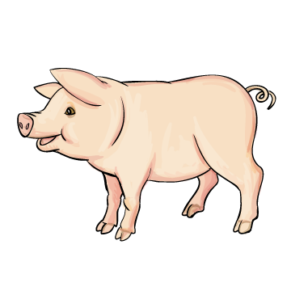

 |
|||||||
| dal | M |
di-ós | P |
ked | N |
falo | I |
| dél | I |
dí-os | D |
kedd | Ő |
fal-la | K |
| ad | F |
di-ók | É |
ad-ta | T |
fa-ló | A |
| áld | S |
di-ok | Ö |
at-ta | C |
fal-lo | E |
|
Do-mi-nó
Vad-al-ma
Dön-ci-ke
|
|||||||